Writing With Numbers
- Bachelor Thesis, 2026
- Royal Academy of Art, The Hague
- Stanislaw Zielinski
Abstract
This text is born from my interest in how numbers and letters mix in languages. The main focus is on tracing the development of Hindu-Arabic numerals after they had been adopted by the European civilisation. Next to it I present a small collection of images, that are my personal observations and are usually concerned with situations when numbers are meant to be read rather than calculated. By putting those two threads next to each other I want to draw the readers attention to the interactions between technology and language evolution. I try to encourage a more associative way of looking at graphic design, and remind the importance of borrowing, tracing and re-contextualising forms in the field of typography.
Introduction
Each time I see a number being used to ‘shorten’ a word I appreciate the slightly odd visual it produces. fig. 1 Writing in this way is possible thanks to numerals’ homophony – shared pronunciation – with certain words. What would originally be written with several letters is compressed into one sign that has its own sound. When typing is done on numeric keypads it can clearly speed up the writing process. I use numbers as text mostly to make my messages feel more casual and funny, or simply out of habit.1
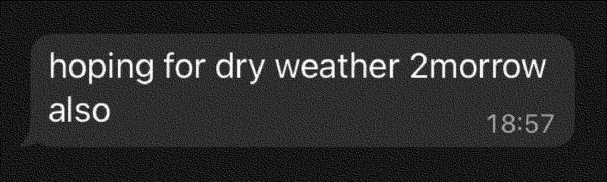
Another, related way of using numerals to change the common appearance of a word is to disguise them as Latin letters; ‘0’ replaces the letter ‘O,’ ‘1’ becomes capital ‘I’ and so on. It is seen less often in message exchange, but it can be applied, for example, to get closer to a desired social media user name that is already taken in its alphabetic form. fig. 2
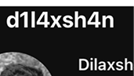
The two examples of writing styles described above show how symbols, in this case numerals, are adopted for uses other than their original, calculatory purpose.2 What interests me in such examples is how they ‘extend’ scripts. For me, they express a fundamentally graphical way of thinking – expressed by interrupting the way words look.
In this text I want to explore the relationship between the alphabetic and numeric symbols by looking at typefaces from different periods in order to understand how the Hindu-Arabic numeral forms, have been influenced by the European civilisation and its technologies.
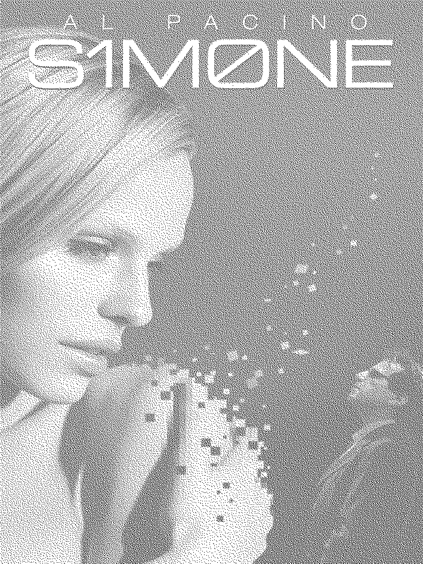
Typographic terminology
In my experience, which is dominated by looking at digital displays, words that mix letters with numbers are usually set in sans serif typefaces, often the system (or app) defaults.fig. 4
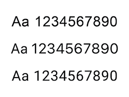
In these typefaces, numerals share uniform height, which is set to match, or come very close to, the height of capital letters. In the field of typography, that kind of number forms are usually called ‘lining,’ as none of their parts extend below or above the line of text. They are ‘lined up’ with each other. Two other common terms used to describe them are ‘modern,’ which vaguely places them in time, and ‘titling,’ which gives a hint of their typographic function.3
Typographic terminology also includes terms that are, in some way, opposite to those I just mentioned. They describe a set of numerical symbols that is usually not included in the common sans-serif fonts. ‘Non-lining’ or ‘ranging’ (as opposed to ‘lining’), ‘old-style’ (as opposed to ‘modern’), or ‘text’ (as opposed to ‘titling’) numerals fig. 5 are generally considered to be more comfortable to read within longer texts.4 This feeling is attributed to the way they fit into the pattern created by lowercase letters. Unlike lining numerals, these vary in height: usually ‘6’ and ‘8’ ascend above the height of lowercase letter ‘x,’ while ‘3,’ ‘4,’ ‘5,’ ‘7,’ and ‘9’ descend below the line on which the text sits, ‘0,’ ‘1’ and ‘2’ fit exactly within the x-height bounds. Therefore the old-style version of the numeral ‘9’ is visually closer to the lowercase ‘q,’ or a single storey ‘g,’ than its lining substitute.
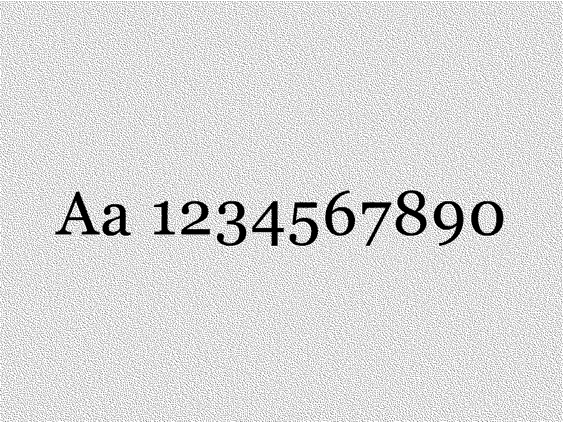
Numerals on the web
If a font doesn’t display the old-style figures by default, they can be activated through the use of special features of the open-type font format.
Out of nine web-safe typefaces, mentioned by a popular code-learning site – W3 Schools — only one – Georgia – uses the old-style numerals by default.5 Before researching this essay, I had never consciously noticed that the standard version of this typeface does not include lining numerals at all.6 Noticing this feature led me to further explorations around that typeface.
Georgia was designed by Matthew Carter for Microsoft as a ‘sturdy, dependable typeface for online reading’.7 First released in 1996, it was crafted for low-resolution screens, which at the time, restricted type design significantly. Each typeface had to be manually optimised in order to appear as close as possible to its intended shapes. Today Microsoft’s website names various reading-friendly features of Georgia, among them – the ‘slightly non-aligning’ numerals, which – they say – is a ‘characteristic that imparts flavour of individuality to any page set in Georgia’.8 The standard version of the typeface, included in Microsoft’s ‘Core fonts for the web,’ was updated a couple of times; its character set remained unchanged since version 2.00, released in 1998.9
Looking for information online I visited a few forums where users complained about Georgia’s numerals.10 After reading some of the exchanges I got a feeling that it is a favourite typeface for many, not for, but despite its old-style figures. One particular post, on a discontinued typographic forum – Typophile11, directed me towards the exact origins of the shapes, as well as the reasons behind the term ‘slightly non-aligning’ I saw earlier on Microsoft page.12 Under the thread headlined ‘Lining numerals to match with Georgia?,’ started in 2009 (note that Georgia Pro was not yet released), a few people suggested to use ‘original’ Georgia figures, included in first release of the font.fig. 6 Further on, more users expressed their preference for that set of digits.
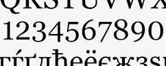
One responder provided more context mentioning his own conversation with Matthew Carter, in which the designer described the original drawing of Georgia’s figures as ‘hybrid’ – somewhere in between lining and old–style forms.13 He also explained that the later decision to abandon the hybrid forms and stick to true old-style numerals was dictated by a confusing feeling at small sizes, perhaps also connected to the by-the-time low screen resolutions I mentioned earlier. This change is noted, yet not explained, on the ‘Core fonts for the web’ website, within the text accompanying Georgia’s update from 1998.14 The in-between or ‘hybrid’ forms, known from typefaces known as Scotch Roman were one of Carter’s main references – as stated on Georgia’s overview page.
Changes in height
Trying to understand where those numeral forms came from, I looked at the Scotch Roman faces and their background. A section dedicated to that style of typefaces on lucdevroye.org15 mentions the name of Richard T. Austin, a punchcutter who lived in England at the turn of 18th and 19th centuries.16 As I understand, the ‘slightly non-aligning’ numerals seen in Richard Austin’s Scotch-Roman, were variations on his own work – namely the numerals from Bell – a typeface he cut a few decades earlier, for John Bell – a publisher and the owner of British Letter Foundry.17
Bell interests me mainly for its role in the transition to, or rather, introduction of lining numerals. I came across this typeface a few times, most importantly in The Elements of Typographic Style by a Canadian typographer Robert Bringhurst. In this book – regarded as a classic in the field of typography18 – he section dedicated to numerals mentions Bell as the first typeface that popularised ‘lining’ figures.
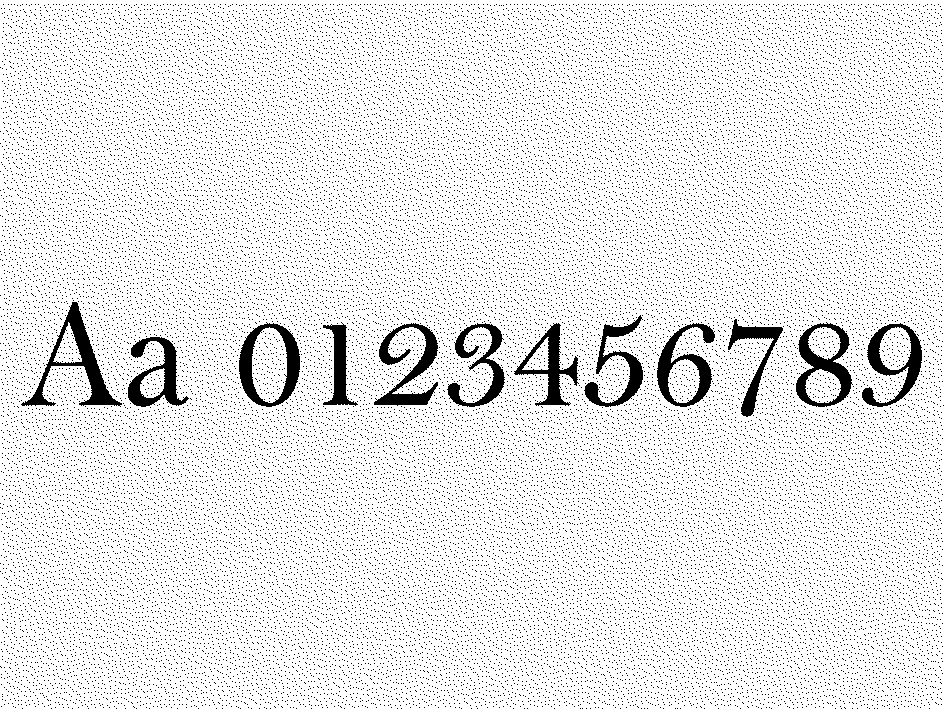
Each number in Bell fig. 7 is almost the same height, approximately three-quarters of the capital letters, which for a text face cut in 1788, was an unknown characteristic. A different type historian and typographer – Walter Tracy – referred to Bell’s numerals in his book Letters of Credit19 by stating that, thanks to their height, they ‘blend well with the lowercase alphabet’.20 He also suggested that lining numerals of capital height had been seen in the work of Caslon type foundry from the 1780s. I couldn’t find any images of Caslon’s works mentioned by Tracy, but one of the specimens from 1785, issued by Joseph Fry and Sons, a letter foundry which followed Caslon’s designs, presents lining numerals of exactly capital height.21
Those two perspectives on Bell’s role in the popularisation of lining numerals might seem to disagree, but in my view that shows the role that borrowing, and constant reinterpretations play in the typographic process.
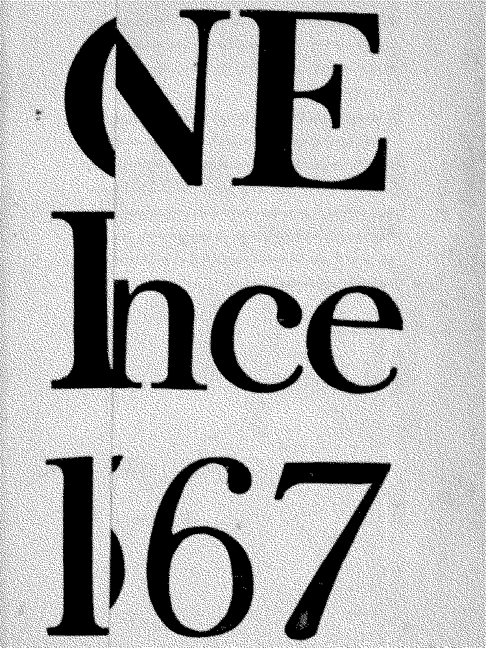
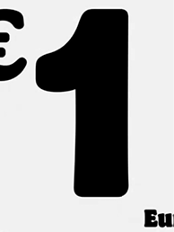
While it is intriguing to try and identify the earliest examples of lining numerals, my main interest lies in understanding the context in which they began to appear. Bringhurst suggested that the new proportions of digits could have been connected to the growth in the cultural significance of numbers during 18th century, pointing towards the rise of shopping culture.22
Whether it was on window displays or placards, they had to provide a clear message and attract the customers, therefore big numerals that would clearly communicate the price and fit the capital letters were needed, which remained a standard in the world of advertising.
In my view, the three-quarters numerals from Bell could have been, a kind of, compromise between the capital-like forms from the new commercial reality and the older ones known from books. Perhaps it was punchcutter’s attempt to standardise the number forms by giving them their own case, separate from the alphabet.
Alphanumeric overlaps
Before the 18th century, numerical forms have remained largely untouched and haven’t received much attention from type designers.23 This brings me back to the time when Hindu-Arabic numerals met the early European printing presses, in the end of 15th century. What is worth mentioning here, is that during that period of time the European representations of counting were mostly incompatible with each other, and reserved for the elites.24 The printing and popularisation of new, foreign counting system helped to change that, one of the books, which could be credited here is Treviso’s Arithmetic – an anonymous textbook in commercial arithmetic published in 1478.25 By the time it was published, various foundries already had their own interpretations of all ten Hindu-Arabic numerals, however Treviso Arithmetic, seems to use lowercase ‘i’ and ‘o’ to represent one and zero respectively. fig. 10
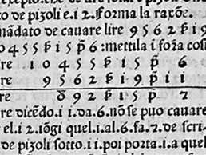
Punchcutters’ and/or printers’ decisions to conflate those signs could have been dictated by the need for speed and efficiency. Forging additional characters would influence the economy of production, making the whole process more costly. I can’t be sure if the financial gain, or time savings were the deciding factors behind those choices; maybe the forms appeared so close that making of additional shapes was believed simply unnecessary. Even looking at the digital facsimile today, without full comprehension of the language, surrounding context seems enough to tell the characters apart.
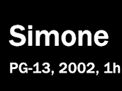
I really appreciate the act of merging letters with numbers seen in Treviso Arithmetic, I see it as both – trust being put in the reader – and a clever typographic choice. In fact, this way of thinking is close to the conventions used for printing and writing Roman numerals, which remained the dominant system at the time. Bringhurst mentioned that professional scribes had developed a habit of ‘harmonizing’ Roman numerals with the surrounding alphabet, adjusting the same case to match the surrounding letterforms.26
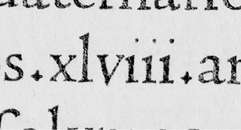
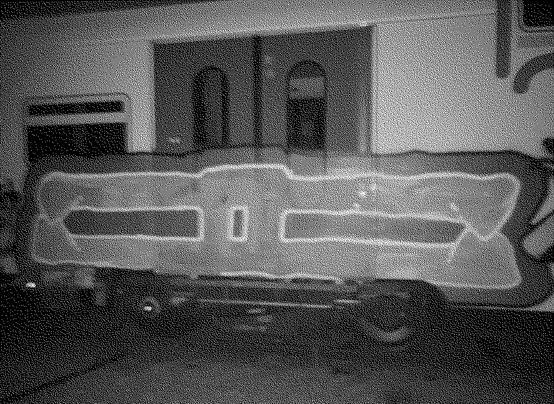
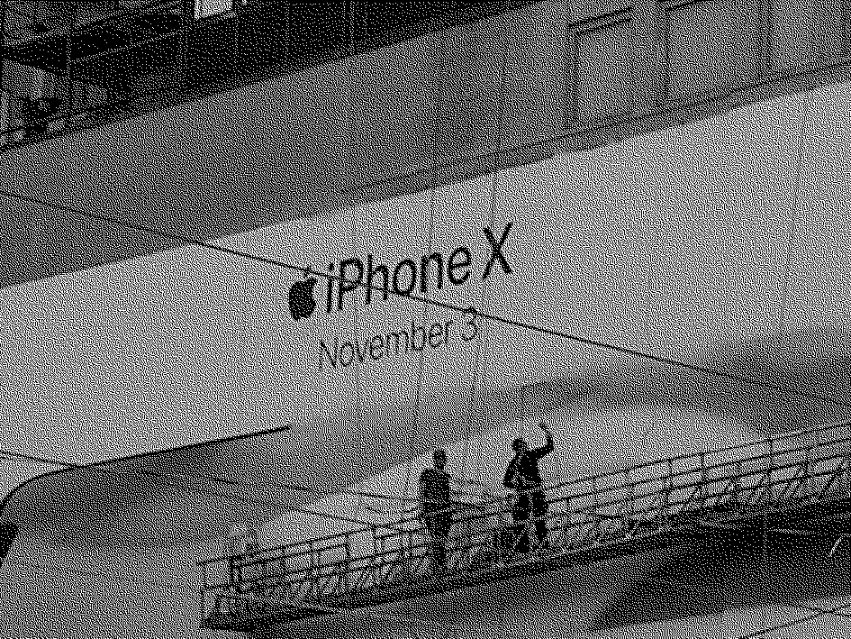
Another example showing a similar overlap, possible thanks to proximity of alphabetic and numeric forms, can be found in the history of typewriting. Some of the early typewriters, which typed all-uppercase included only the digits ‘2’ to ‘9’.
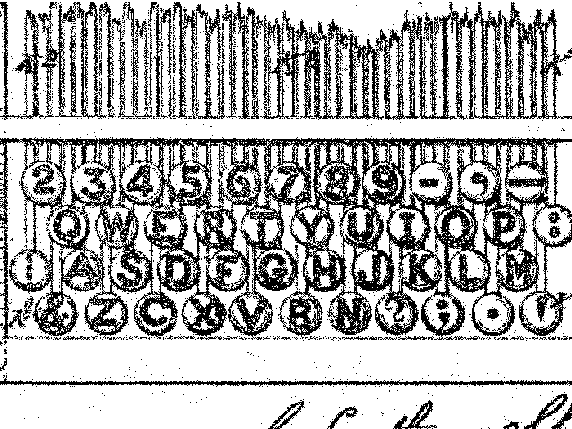
A decision similar to the one I mentioned presenting Treviso Arithmetic was made, ‘I’ and ‘O’ keys typed both: digits and letters – depending on the context, and in favour of ‘cost efficiency and manufacturing simplicity’.
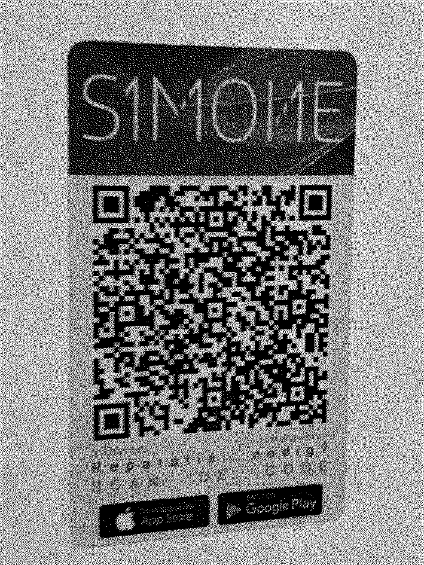
When the introduction of lowercase letters together with a ‘shift’ key extended the range of accessible characters, the secondary input spots on numeral keys were accommodated by other typographic symbols, as seen on most common computer keyboards today. This decision shows, that the distinction between lining and ‘non-lining’ figures was not a question of ‘case,’ rather a question of ‘style’. It appears even more clear when thinking about numerals as ideograms – symbols representing ideas, not as alphabet symbols representing phonemes – the concept of a number ‘1’ is fixed, while the sounds represented by ‘a’ are open for interpretation.
Typing numerals
This observation eventually leads me back to the contemporary computer technology, which, judging by the QWERTY keyboard itself is directly related to the typewriter history. Today, vast majority of typographic signs exchanged online are managed by Unicode standard, a character encoding system, which forms the basis of all text-related software. Its first official release in 1991 aimed to solve issues related to previous, incomplete systems of character encoding.
This standard is ruled by the Unicode Consortium, a private, non-profit organisation responsible for creating and updating the character set by assigning code point – a unique number – to each character that the consortium agrees to recognise. The latest update, Version 17.0.0., was released in September 2025 and extended the standard’s range to a total of 159,8o1 characters.28
In contrast to lowercase and uppercase letters, old-style figures are not encoded separately from lining figures in Unicode. They are considered stylistic variations of the same characters. That’s why they cannot be accessed directly from the keyboard without changing the software settings (unless they are the default numerals in a font, as in Georgia).
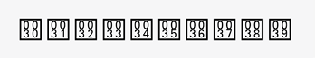
That look at the differences between old-style and lining figures makes me wonder what would happen if the Hindu-Arabic numeral forms had developed in a similar way as the Latin alphabet – maybe then, changing between those two styles would be as easy and as common as going from lowercase to uppercase letters. It wouldn’t be reserved for typographers or limited to certain typefaces. Including them in standards like Unicode, and consequently in the popular sans-serif system fonts could free them from the old-style label, then no special formatting knowledge would be required to use them, just a decision to type a different character.
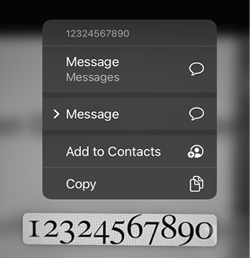
Bibliography
- Bigelow, Charles. ‘Oh Oh Zero Zero: Typeface and Identity in the Digital Age.’
- Bringhurst, Robert. The Elements of Typographic Style. Vancouver: Hartley & Marks, 1992.
- ‘Georgia.’ Microsoft Typography. Accessed April 1, 2026. learn.microsoft.com
- ‘Core Fonts for the Web.’ Microsoft (archived). Accessed April 1, 2026. web.archive.org
- ‘Lining Numerals to Match with Georgia?’ Typophile (archived forum thread). Accessed April 4, 2026. web.archive.org
- Reddit user post. ‘Using Georgia Font for a Table of Numbers Thanks.’ Reddit, September 2023. reddit.com
- Plant, Sadie. Zeros + Ones: Digital Women and the New Technoculture. New York: Doubleday, 1997.
- Reinfurt, David. A *Co-* Program for Graphic Design. New York: Inventory Press, 2016.
- Throop, Liz C. ‘Thinking on Paper.’ Visible Language 38, no. 3 (2004).
- Tracy, Walter. Letters of Credit: A View of Type Design. Boston: David R. Godine, 1986.
- ‘Treviso Arithmetic (1478).’ Digital facsimile. BEIC Digital Library. Accessed April 1, 2026.
- ‘Caslon Specimen (1785).’ Internet Archive. Accessed April 3, 2026. archive.org
- ‘The Sholes & Glidden Type Writer, with the First QWERTY Keyboard.’ Accessed April 4, 2026. historyofinformation.com
- ‘Unicode Standard.’ Unicode Consortium. Accessed April 3, 2026. unicode.org
Footnotes
- ‘Textese,’ a condensed form of language that emerged in the 1990s to save time when texting on devices where the alphabet is mapped onto a limited number of keys. See also Reuters, Brick Phones Will Ring an Unlikely Revival, December 19, 2024; and International Telecommunication Union, Recommendation E.161 (2001).
- Using numerals like that is close to ‘leet speak,’ an internet slang based on visual similarity of characters. It originated online in the 1980s as a way to bypass filters, and exchange messages that could be banned for mentioning flagged language.
- Robert Bringhurst, The Elements of Typographic Style (Vancouver: Hartley & Marks, 1992), 46.
- Bringhurst, The Elements of Typographic Style, 46.
- The term ‘web-safe typefaces’ refers to a set of fonts distributed by Microsoft as part of its 1996 project ‘Core Fonts for the Web,’ whose goal was to allow users to ‘see pages exactly as the site designer intended.’ Microsoft, ‘Core Fonts for the Web,’ accessed April 3, 2026, web.archive.org.
- Georgia Pro, released in 2010, offers an expanded character set; in this version, cap-height lining numerals are the default numeric style. Carter & Cone, ‘Georgia,’ accessed April 3, 2026, carterandcone.com.
- Carter & Cone, accessed April 3, 2026, carterandcone.com.
- Microsoft, ‘Georgia (Typeface),’ Microsoft Learn, accessed April 3, 2026, learn.microsoft.com.
- Microsoft, ‘Georgia (Typeface).’
- Reddit user, ‘Using Georgia Font for a Table of Numbers Thanks,’ Reddit, September 2023, reddit.com.
- ‘Lining Numerals to Match with Georgia?,’ Typophile (archived forum thread), accessed April 3, 2026, web.archive.org.
- Microsoft, ‘Georgia (Typeface).’
- ‘Lining Numerals to Match with Georgia?’
- Microsoft, ‘Core Fonts for the Web.’
- One of my favourite sources of typographic knowledge — lucdevroye.org. ‘Type design information page’, a section of this site, is a sort of incomplete online type-encyclopaedia. Luc Devroye is a Belgian computer scientist, mathematician, and what seems to me a devoted type-researcher; he maintained it until 2022.
- Luc Devroye, ‘Scotch Roman,’ accessed April 1, 2026, luc.devroye.org.
- Luc Devroye, ‘Fonts (36926),’ accessed April 1, 2026, luc.devroye.org.
- The Elements of Typographic Style is a guide that could be understood as a very conservative set of strict typographic rules, but at the same time its foreword encourages breaking them.
- Walter Tracy’s Letters of Credit is generally less canonical than Robert Bringhurst’s The Elements of Typographic Style. I encountered Tracy’s book in the course of researching the history of the Bell typeface.
- Tracy, Letters of Credit, 68.
- A reference to Caslon can be found in the same publication on the ‘advertisement’ page. Specimen of Printing Types (London: Joseph Fry and Sons, 1785), accessed April 2, 2026, archive.org.
- Bringhurst, The Elements of Typographic Style, 47.
- Walter Tracy also mentions attempts of alternating the alignment of old-style figures, for example by raising 3 and 5 to stand on the baseline, placing those examples in the second half of the 18th century.
- Liz C. Throop, ‘Thinking on Paper,’ Visible Language 38, no. 3 (2004), accessed April 2, 2026, journals.uc.edu.
- A digital facsimile is available for public access via BEIC Milan Library online viewer.
- Bringhurst, The Elements of Typographic Style, 46.
- David Reinfurt, A *Co-*Program for Graphic Design (New York: Inventory Press, 2016), 231.
- Unicode Consortium, ‘Unicode: The World Standard for Text and Emoji,’ accessed April 1, 2026, home.unicode.org.
Colophon
-
Bachelor thesis, 2026
- Stanislaw Zielinski
-
Supervisor
- Barbara Neves Alves
-
Coding tutors
- Thomas Buxo
- François Girard-Meunier
-
Last updated
- April 2026
-
7h4nk5 2
- m4lv4, vl4d, j43hyun, d4n5, ii91a, and 9484
-
Note on colour
- This shade of pink, in hex colour code is noted down as #ff1199. The visual similarity between the shortened version of that code #f19 and the abbreviation fig. made me feel that using it for all the figure-related text is a good choice for that document. More hex-based word-colours can be found here: https://hexwords.netlify.app/.